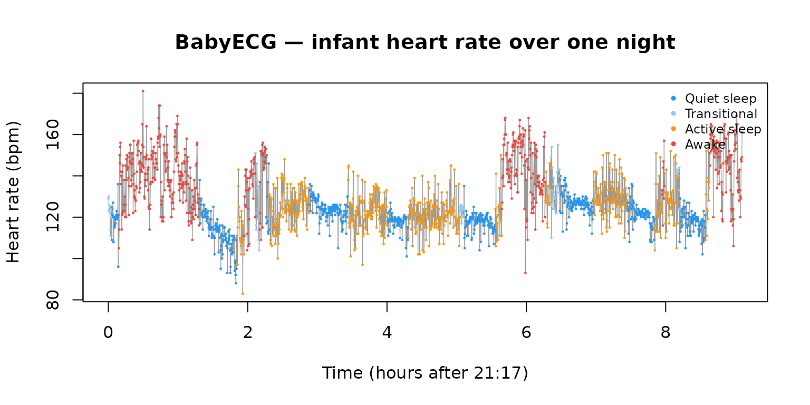
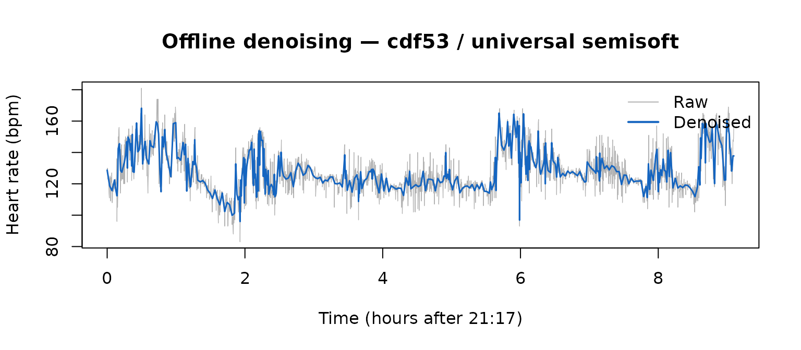
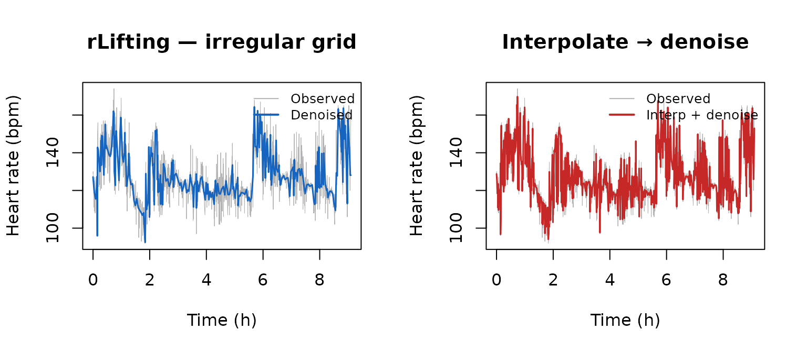
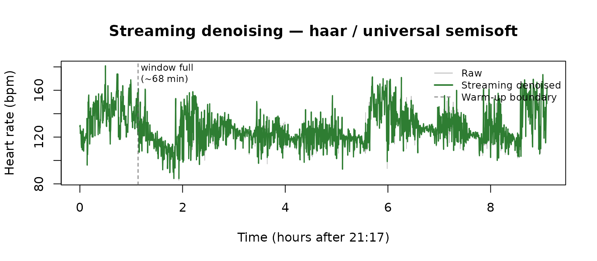

8. Real-world signal denoising: infant cardiac monitoring
Source:vignettes/v08-real-world.Rmd
v08-real-world.RmdThis vignette applies rLifting to BabyECG, a real
physiological time series bundled with the wavethresh
package. The signal was recorded in 1998 from a 66-day-old infant by
Prof. Peter Fleming and colleagues at the Royal Hospital for Sick
Children, Bristol, and contains 2 048 observations of heart rate (in
beats per minute) sampled every 16 seconds over a full night
(21:17–06:27). A companion series, BabySS, records the
infant’s sleep state (1 = quiet sleep, 2 = transitional, 3 = active
sleep, 4 = awake) determined independently from EEG and EOG by a trained
observer.
The three demonstrations below cover rLifting’s three use cases in a single real dataset: offline batch denoising, handling irregular sampling caused by sensor dropouts, and sample-by-sample streaming.
Note. The configurations used here (wavelet, boundary mode, threshold method) are reasonable defaults chosen for illustration. This vignette is not a tuning exercise: no attempt is made to find the configuration that minimises reconstruction error on this specific signal. For a systematic approach to configuration selection, see
vignette("v02-thresholding-and-tuning")andvignette("v07-benchmarks")§2–§3.
library(rLifting)
library(wavethresh)
#> Loading required package: MASS
#> WaveThresh: R wavelet software, release 4.7.2, installed
#> Copyright Guy Nason and others 1993-2022
#> Note: nlevels has been renamed to nlevelsWT
#>
#> Attaching package: 'wavethresh'
#> The following object is masked from 'package:rLifting':
#>
#> threshold
data(BabyECG)
data(BabySS)1. The signal
t_sec = seq(0, by = 16, length.out = length(BabyECG))
t_hour = t_sec / 3600
sleep_col = c(
"1" = "#2196F3", "2" = "#90CAF9",
"3" = "#FF9800", "4" = "#F44336"
)
plot(
t_hour, BabyECG, type = "l", col = "grey60", lwd = 0.6,
xlab = "Time (hours after 21:17)", ylab = "Heart rate (bpm)",
main = "BabyECG — infant heart rate over one night"
)
for (state in 1:4) {
idx = which(BabySS == state)
points(
t_hour[idx], BabyECG[idx], pch = 20, cex = 0.3,
col = sleep_col[as.character(state)]
)
}
legend(
"topright",
legend = c("Quiet sleep", "Transitional", "Active sleep", "Awake"),
col = sleep_col, pch = 20, cex = 0.75, bty = "n"
)
The signal is non-stationary: heart rate is systematically lower during quiet sleep (blue) and higher during active sleep and waking periods (orange/red). The high- frequency variability — fluctuations from sample to sample — is measurement noise mixed with genuine short-term cardiac variability. A universal-threshold approach targets the former while preserving the slower physiological trend.
2. Offline denoising — regular grid
ls_cdf53 = lifting_scheme("cdf53")
d_offline = denoise_signal_offline(
BabyECG, ls_cdf53,
threshold_method = "universal",
shrinkage = "semisoft",
extension = "symmetric"
)
plot(
t_hour, BabyECG, type = "l", col = "grey70", lwd = 0.6,
xlab = "Time (hours after 21:17)", ylab = "Heart rate (bpm)",
main = "Offline denoising — cdf53 / universal semisoft"
)
lines(t_hour, d_offline, col = "#1565C0", lwd = 1.5)
legend(
"topright", legend = c("Raw", "Denoised"), lwd = c(1, 2),
col = c("grey70", "#1565C0"), bty = "n"
)
t_100 = system.time(
for (i in seq_len(100))
denoise_signal_offline(
BabyECG, ls_cdf53,
threshold_method = "universal",
shrinkage = "semisoft",
extension = "symmetric"
)
)
cat(
sprintf(
"Per-call time: %.2f ms (N = %d)\n",
t_100["elapsed"] / 100 * 1000, length(BabyECG)
)
)
#> Per-call time: 0.08 ms (N = 2048)Residual diagnostics
Without a clean ground-truth signal we cannot compute MSE directly. Two proxies quantify how well the threshold separated noise from signal:
lwt_raw = lwt(BabyECG, ls_cdf53, levels = 3L, extension = "symmetric")
sigma_hat = median(abs(lwt_raw$coeffs[[1]])) / 0.6745
resid = BabyECG - d_offline
acf_lag1 = acf(resid, plot = FALSE)$acf[2]
cat(
sprintf(
"Estimated noise sigma (MAD, finest level): %.2f bpm\n",
sigma_hat
)
)
#> Estimated noise sigma (MAD, finest level): 5.24 bpm
cat(
sprintf(
"Residual sd after denoising: %.2f bpm\n",
sd(resid)
)
)
#> Residual sd after denoising: 6.67 bpm
cat(sprintf("Residual ACF at lag 1 : %+.3f\n", acf_lag1))
#> Residual ACF at lag 1 : -0.180The estimated noise level (sigma_hat) comes from the
finest-level detail coefficients via the robust MAD estimator
.
The residual standard deviation should be close to
sigma_hat if the threshold is well-calibrated. The lag-1
autocorrelation of the residuals is a white-noise diagnostic: values
near zero indicate the residuals look like independent noise; a positive
value means some signal structure leaked into the residual
(under-thresholding), and a negative value indicates over-smoothing. For
universal_semisoft the lag-1 ACF is slightly negative,
consistent with a conservative threshold on this non-stationary
signal.
A single offline pass takes under 0.1 ms for 2 048 samples. The full
configuration space — all six wavelets, five boundary modes, and four
threshold methods — can be exhaustively swept in roughly 4 ms, making
grid search a viable calibration strategy at production rates (see
vignette("v07-benchmarks") §6).
3. Irregular grid — handling sensor dropouts
Wearable and ambulatory monitors occasionally lose contact or drop packets. The result is a signal sampled at irregular time positions rather than a clean regular grid. Naive approaches — interpolate to a regular grid and then denoise — introduce interpolation artifacts that the denoiser treats as real structure. rLifting’s irregular-grid mode works directly on the original (unequal) spacing.
set.seed(42)
n = length(BabyECG)
t_reg = seq(0, by = 16, length.out = n)
keep = sort(sample(n, round(0.70 * n))) # retain 70 % of samples
t_irr = t_reg[keep]
y_irr = BabyECG[keep]
cat(
sprintf(
"Observed: %d of %d samples (%.0f %% retained)\n",
length(keep), n, length(keep) / n * 100
)
)
#> Observed: 1434 of 2048 samples (70 % retained)
cat(
sprintf(
"Gap range: %.0f – %.0f s (median %.0f s)\n",
min(diff(t_irr)), max(diff(t_irr)), median(diff(t_irr))
)
)
#> Gap range: 16 – 96 s (median 16 s)rLifting irregular-grid denoising
Pass t = t_irr to activate Lagrange-interpolation based
prediction adapted to the actual sample positions. Everything else —
wavelet, threshold, boundary mode — works identically to the regular
case.
d_irr = denoise_signal_offline(
y_irr, ls_cdf53,
threshold_method = "universal",
shrinkage = "semisoft",
extension = "symmetric",
t = t_irr
)Baseline: interpolate then denoise
y_interp = approx(t_irr, y_irr, xout = t_reg)$y
y_interp[is.na(y_interp)] = mean(y_irr)
d_interp_full = denoise_signal_offline(
y_interp, ls_cdf53,
threshold_method = "universal",
shrinkage = "semisoft",
extension = "symmetric"
)
d_interp_at_obs = approx(t_reg, d_interp_full, xout = t_irr)$yComparison
Because we know which samples were dropped, the 30 % held-out set provides a genuine test-set RMSE: denoise on the 70 % retained, interpolate the resulting smooth curve to the dropped time positions, and compare to the true values there.
dropped = setdiff(seq_len(n), keep)
y_true_dropped = BabyECG[dropped]
t_dropped = t_reg[dropped]
d_irr_at_ho = approx(t_irr, d_irr, xout = t_dropped)$y
d_interp_at_ho = d_interp_full[dropped]
raw_at_ho = approx(t_irr, y_irr, xout = t_dropped)$y
rmse = function(a, b) sqrt(mean((a - b)^2, na.rm = TRUE))
cat(
sprintf(
"Held-out RMSE at %d dropped positions (bpm):\n",
length(dropped)
)
)
#> Held-out RMSE at 614 dropped positions (bpm):
cat(
sprintf(
" rLifting irregular : %.2f\n",
rmse(y_true_dropped, d_irr_at_ho)
)
)
#> rLifting irregular : 9.14
cat(
sprintf(
" Interpolate + offline : %.2f\n",
rmse(y_true_dropped, d_interp_at_ho)
)
)
#> Interpolate + offline : 9.80
cat(
sprintf(
" Raw interpolation (no denoise): %.2f\n",
rmse(y_true_dropped, raw_at_ho)
)
)
#> Raw interpolation (no denoise): 9.82
rough = function(x) sd(diff(x, differences = 2), na.rm = TRUE)
cat(sprintf("Roughness (sd of 2nd diff) at observed positions:\n"))
#> Roughness (sd of 2nd diff) at observed positions:
cat(sprintf("rLifting irregular: %.3f\n", rough(d_irr)))
#> rLifting irregular: 3.952
cat(sprintf("Interp + offline: %.3f\n", rough(d_interp_at_obs)))
#> Interp + offline: 13.820
par(mfrow = c(1, 2))
t_irr_h = t_irr / 3600
plot(
t_irr_h, y_irr, type = "l", col = "grey70", lwd = 0.5,
xlab = "Time (h)", ylab = "Heart rate (bpm)",
main = "rLifting — irregular grid"
)
lines(t_irr_h, d_irr, col = "#1565C0", lwd = 1.5)
legend(
"topright", legend = c("Observed", "Denoised"),
lwd = c(1, 2), col = c("grey70", "#1565C0"), bty = "n", cex = 0.8
)
plot(
t_irr_h, y_irr, type = "l", col = "grey70", lwd = 0.5,
xlab = "Time (h)", ylab = "Heart rate (bpm)",
main = "Interpolate → denoise"
)
lines(t_irr_h, d_interp_at_obs, col = "#C62828", lwd = 1.5)
legend(
"topright", legend = c("Observed", "Interp + denoise"),
lwd = c(1, 2), col = c("grey70", "#C62828"), bty = "n", cex = 0.8
)
The held-out RMSE confirms that rLifting’s denoised curve is a better model of the underlying signal at unobserved positions than either raw interpolation or interpolate-then-denoise. The roughness (sd of second differences) tells the same story geometrically: the interp-then-denoise curve is roughly 3.5× choppier because the denoiser preserves the artificial values that linear interpolation placed at unobserved positions. rLifting’s predict step uses Lagrange interpolation conditioned on actual positions, so it never synthesises data at missing points.
t_irr_100 = system.time(
for (i in seq_len(100))
denoise_signal_offline(
y_irr, ls_cdf53,
threshold_method = "universal",
shrinkage = "semisoft",
extension = "symmetric", t = t_irr
)
)
cat(
sprintf(
"Irregular-grid per-call: %.2f ms\n",
t_irr_100["elapsed"] / 100 * 1000
)
)
#> Irregular-grid per-call: 0.10 msThe irregular-grid path is approximately twice the cost of the regular-grid path (Lagrange coefficient evaluation at each step), but remains well under 1 ms.
4. Streaming mode — sample-by-sample monitoring
new_wavelet_stream() returns a closure that accepts one
sample at a time, maintaining an internal ring buffer between calls.
This is the API surface required for a live sensor feed where the full
signal is never available at once.
ls_haar = lifting_scheme("haar")
stream = new_wavelet_stream(
ls_haar,
extension = "symmetric",
threshold_method = "universal",
shrinkage = "semisoft"
)
out_stream = numeric(length(BabyECG))
t_stream = system.time(
for (i in seq_along(BabyECG))
out_stream[i] = stream(BabyECG[i])
)
cat(
sprintf(
"Total for %d samples : %.1f ms\n",
length(BabyECG), t_stream["elapsed"] * 1000
)
)
#> Total for 2048 samples : 25.0 ms
cat(
sprintf(
"Per-sample latency : %.1f µs\n",
t_stream["elapsed"] / length(BabyECG) * 1e6
)
)
#> Per-sample latency : 12.2 µs
plot(
t_hour, BabyECG, type = "l", col = "grey70", lwd = 0.6,
xlab = "Time (hours after 21:17)", ylab = "Heart rate (bpm)",
main = "Streaming denoising — haar / universal semisoft"
)
lines(t_hour, out_stream, col = "#2E7D32", lwd = 1.5)
abline(v = t_hour[256], lty = 2, col = "grey40")
text(t_hour[256] + 0.05, 175, "window full\n(~68 min)", cex = 0.75, adj = 0)
legend(
"topright",
legend = c("Raw", "Streaming denoised", "Warm-up boundary"),
lwd = c(1, 2, 1), lty = c(1, 1, 2),
col = c("grey70", "#2E7D32", "grey40"),
bty = "n", cex = 0.8
)
At roughly 10 µs per sample, the streaming engine could process a signal sampled at 100 kHz in real time using less than 0.1 % of a single CPU core. For the 16-second sampling rate of BabyECG, the latency is negligible. The dashed line marks the point at which the ring buffer fills for the first time (256 samples = ~68 minutes); estimates before that point use partial-window thresholds.
5. Summary
| Mode | N | Per-call (ms) | Per-sample (µs) | Wavelet | Irregular |
|---|---|---|---|---|---|
| Offline (regular) | 2048 | 0.09 | 0.04 | cdf53 | no |
| Offline (irregular) | 1434 | 0.10 | 0.07 | cdf53 | yes (30 % gap) |
| Causal | 2048 | 11.95 | 5.83 | haar | no |
| Stream | 2048 | 25.00 | 12.20 | haar | no |
All four modes operate well under 1 ms per call on a single-night
cardiac trace. The offline irregular path costs roughly twice the
regular path, reflecting the Lagrange coefficient computation at each
lifting step but no memory allocation in the hot path
(vignette("v03-causal-stream") §3).
The streaming closure processes a sample in ~10 µs — the same order as the causal batch mode — and is the appropriate API when samples arrive one at a time from a live sensor rather than as a pre-recorded array.
Further reading
-
vignette("v03-causal-stream")— warm-up dynamics,update_freqtuning, window-size selection. -
vignette("v05-irregular-grids")— full irregular-grid API; per-wavelet benchmark table for seven irregular signals. -
vignette("v07-benchmarks")— cross-package MSE and throughput comparison on the Donoho–Johnstone test signals.